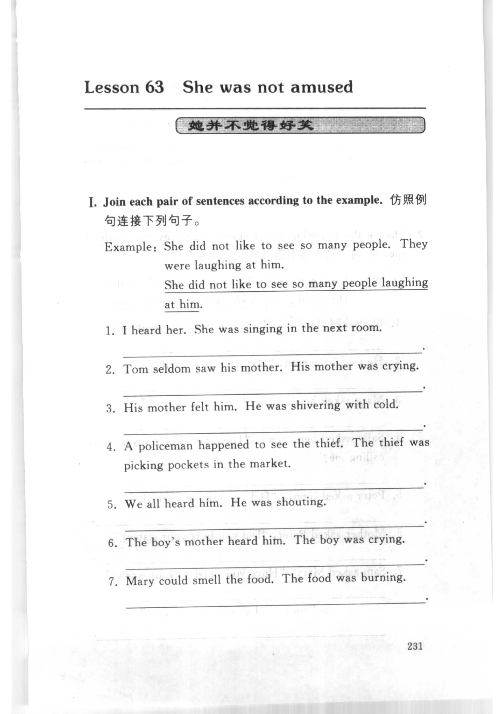
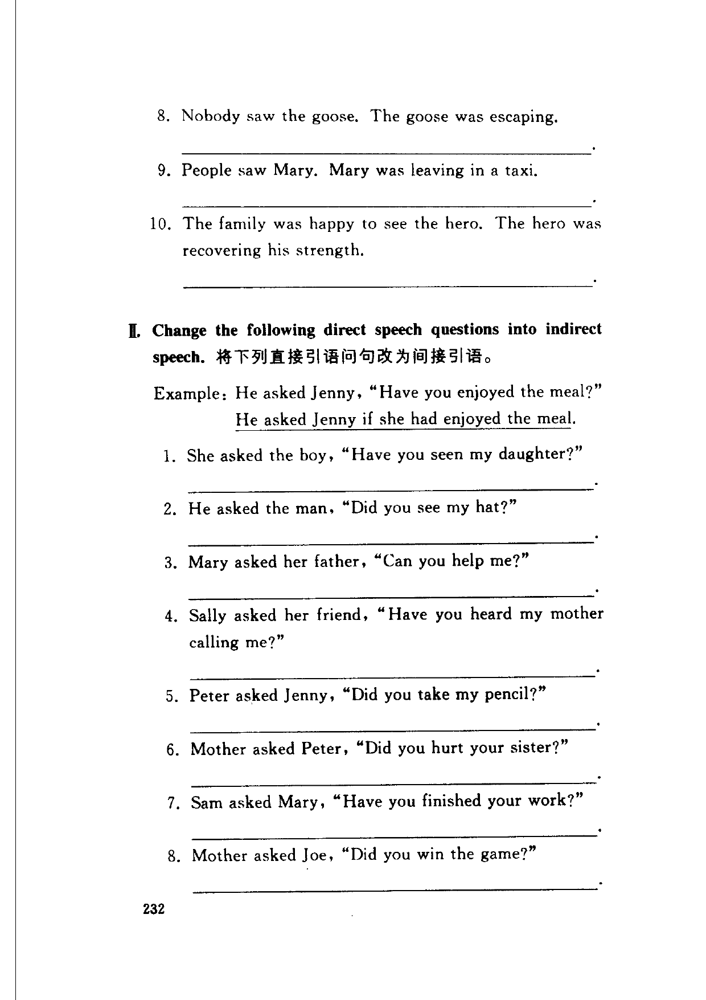
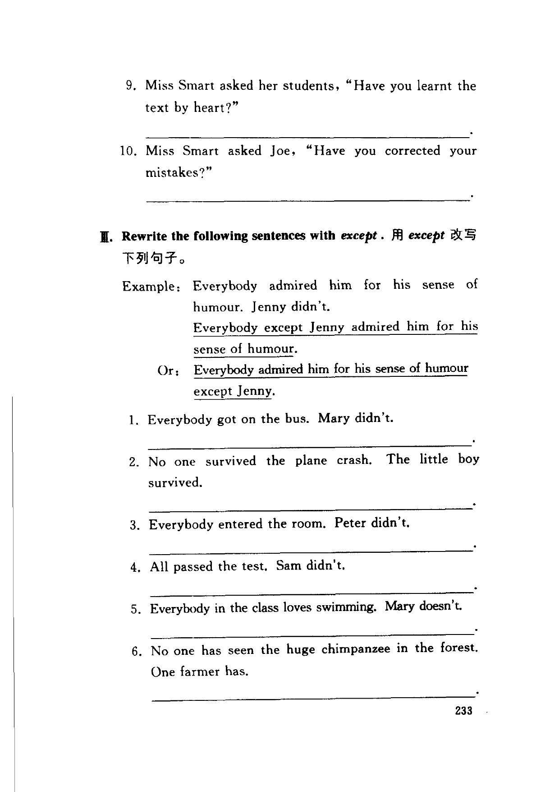
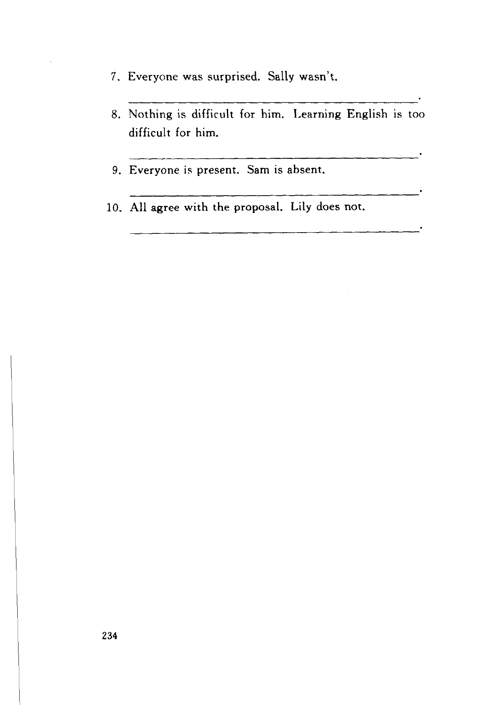

Grammar exercises · 语法练习
I. Join each pair of sentences according to the example.
仿照例句连接下列句子。
Example: She did not like to see so many people. They were laughing at him.
She did not like to see so many people laughing at him.
-
I. Join according to the example — I heard her. She was singing in the next room.
-
I. Join according to the example — Tom seldom saw his mother. His mother was crying.
-
I. Join according to the example — His mother felt him. He was shivering with cold.
-
I. Join according to the example — A policeman happened to see the thief. The thief was picking pockets in the market.
-
I. Join according to the example — We all heard him. He was shouting.
-
I. Join according to the example — The boy's mother heard him. The boy was crying.
-
I. Join according to the example — Mary could smell the food. The food was burning.
-
I. Join according to the example — Nobody saw the goose. The goose was escaping.
-
I. Join according to the example — People saw Mary. Mary was leaving in a taxi.
-
I. Join according to the example — The family was happy to see the hero. The hero was recovering his strength.
II. Change the following direct speech questions into indirect speech.
将下列直接引语问句改为间接引语。
Example: He asked Jenny, “Have you enjoyed the meal?”
He asked Jenny if she had enjoyed the meal.
-
II. Direct to indirect speech — She asked the boy, “Have you seen my daughter?”
-
II. Direct to indirect speech — He asked the man, “Did you see my hat?”
-
II. Direct to indirect speech — Mary asked her father, “Can you help me?”
-
II. Direct to indirect speech — Sally asked her friend, “Have you heard my mother calling me?”
-
II. Direct to indirect speech — Peter asked Jenny, “Did you take my pencil?”
-
II. Direct to indirect speech — Mother asked Peter, “Did you hurt your sister?”
-
II. Direct to indirect speech — Sam asked Mary, “Have you finished your work?”
-
II. Direct to indirect speech — Mother asked Joe, “Did you win the game?”
-
II. Direct to indirect speech — Miss Smart asked her students, “Have you learnt the text by heart?”
-
II. Direct to indirect speech — Miss Smart asked Joe, “Have you corrected your mistakes?”
III. Rewrite the following sentences with except.
用 except 改写下列句子。
Example: Everybody admired him for his sense of humour. Jenny didn't.
Everybody except Jenny admired him for his sense of humour.
Or: Everybody admired him for his sense of humour except Jenny.
-
III. Rewrite with except — Everybody got on the bus. Mary didn't.
-
III. Rewrite with except — No one survived the plane crash. The little boy survived.
-
III. Rewrite with except — Everybody entered the room. Peter didn't.
-
III. Rewrite with except — All passed the test. Sam didn't.
-
III. Rewrite with except — Everybody in the class loves swimming. Mary doesn't.
-
III. Rewrite with except — No one has seen the huge chimpanzee in the forest. One farmer has.
-
III. Rewrite with except — Everyone was surprised. Sally wasn't.
-
III. Rewrite with except — Nothing is difficult for him. Learning English is too difficult for him.
-
III. Rewrite with except — Everyone is present. Sam is absent.
-
III. Rewrite with except — All agree with the proposal. Lily does not.
Original images · 原图对照
Expand a page to compare it with the transcription. Open the original in a new tab to zoom in.
展开原图核对文字，也可以在新标签页打开原图放大查看。
Book page 231 · Lesson title, Exercise I (join each pair of sentences according to the example, example and items 1–7)
Open original · 打开原图 ↗ Download original · 下载原图


Book page 232 · Exercise I (items 8–10) and Exercise II (direct speech questions into indirect speech, example and items 1–8)
Open original · 打开原图 ↗ Download original · 下载原图


Book page 233 · Exercise II (items 9–10) and Exercise III (rewrite with except, example and items 1–6)
Open original · 打开原图 ↗ Download original · 下载原图


Book page 234 · Exercise III (items 7–10)
Open original · 打开原图 ↗ Download original · 下载原图


Your notes and answers
Use this space for longer responses or exercises that do not have an individual answer box.